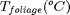

Contents
- writen by Shen, Xinyi, April, 2015
- Algorithm Description
- output arguments
- input arguments
- main routine
- Determine the maximum snow interception water equivalent
- Calculate snow interception
- Reduce the amount of intercepted snow if windy and cold.
- capacity of rain intercepted on branches and stored in intercepted snow
- triger unloading if overload
function [intSnow,intRain,snowThru,rainThru]=canopy_interception(LAI,snowfall,rainfall,windCanopy,... Tfoliage,intSnowOrg,intRainOrg,Wm)
writen by Shen, Xinyi, April, 2015
contact: xinyi.shen@uconn.edu
Algorithm Description
calculate the mass(snow/rainfall) flux caused by canopy interception,
output arguments
input arguments
LAI: leaf area index
snowfall (mm): accumulated snow fall during the current time step
rainfall (mm): accumulated snow fall during the current time step
windCanopy(m/s): adjusted windspeed at the canopy height
 temperature of the canopy material
intSnowOrg(mm): intercepted snow at the last time step
intRainOrg(mm): intercepted rain at the last time step
main routine
global LAI_SNOW_MULTIPLIER MIN_SWQ_EB_THRES
Determine the maximum snow interception water equivalent
Kobayashi, D., 1986, Snow Accumulation on a Narrow Board, Cold Regions Science and Technology, (13), pp. 239-245. Figure 4.
Imax1 = 4.0* LAI_SNOW_MULTIPLIER * LAI; isCold=Tfoliage<=-3; maxSnowInt=4*(Tfoliage>=-1)+(isCold)+(Tfoliage*1.5+5.5).*((Tfoliage<1)&(~isCold)); maxSnowInt=maxSnowInt.*LAI_SNOW_MULTIPLIER * LAI;
Error using canopy_interception (line 28) Not enough input arguments.
Calculate snow interception
dSnowInt=snowfall.*(1-intSnowOrg./maxSnowInt); dSnowInt=min(maxSnowInt-intSnowOrg,dSnowInt); dSnowInt(maxSnowInt<=0)=0;
Reduce the amount of intercepted snow if windy and cold.
Ringyo Shikenjo Tokyo, #54, 1952. Bulletin of the Govt. Forest Exp. Station, Govt. Forest Exp. Station, Meguro, Tokyo, Japan. FORSTX 634.9072 R475r #54. Page 146, Figure 10. Reduce the amount of intercepted snow if snowing, windy, and cold (< -3 to -5 C). Schmidt and Troendle 1992 western snow conference paper.
snowBlown=(DeltaSnowInt>0)& (dSnowInt>0)& isCold;
blownSnow = (0.2 * windCanopy(snowBlown) - 0.2).* dSnowInt(snowBlown);
blownSnow(blowSnow>dSnowInt(snowBlown))=dSnowInt(snowBlown);
dSnowInt(snowBlown)=dSnowInt(snowBlown)-blownSnow;
% if (*IntSnow + DeltaSnowInt > Imax1) DeltaSnowInt =0.0; I do not see the necessity
snowThru=snowfall-dSnowInt;
isThin=(intSnowOrg<MIN_SWQ_EB_THRES)&(snowfall==0);
snowThru(isThin)=snowThru(isThin)+intSnowOrg(isThin);
intSnowOrg(isThin)=0;
intSnow=intSnowOrg+dSnowInt;
intSnow(intSnow<SMALL)=0;
capacity of rain intercepted on branches and stored in intercepted snow
maxWaterInt = LIQUID_WATER_CAPACITY*intSnow + Wm; intRain=intRainOrg+rainfall; rainThru=max(0,intRain-maxWaterInt); intRain=intRain-rainThru; isThin=(intRain<MIN_SWQ_EB_THRES)&(rainfall==0); rainThru(isThin)=rainThru(isThin)+intRain(isThin); intRain(isThin)=0;
triger unloading if overload
totalWater=intRain+intSnow; isOverload=totalWater>Imax1; overload = intSnow(isOverload) + intRain(isOverload) - Imax1(isOverload); intRainFract= intRain(isOverload)./totalWater(isOverload); unloadRain=overload.*intRainFract; unloadSnow=overload.*(1-intRainFract); intRain(isOverload) = intRain(isOverload) - unloadRain; intSnow(isOverload) = intSnow(isOverload) - unloadSnow; rainThru(isOverload) = rainThru(isOverload) + unloadRain; snowThru(isOverload) = snowThru(isOverload) + unloadSnow;
end